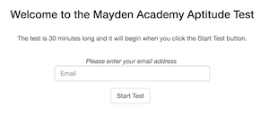
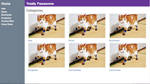
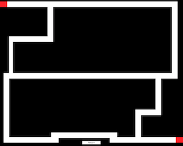
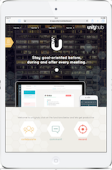
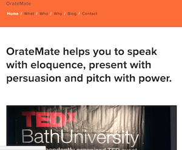

about me
I have been working in software development for 3 years. Initially, in 2015, I founded a digital tech start-up, Unity-Hub. The aim of the company was to develop a Web App that makes business meetings more productive. I secured equity investment from Webstart Bristol to develop my idea and earned a place in the first Entrepreneurial Spark incubator in Bristol. After receiving the investment I outsourced design and development work in order to prove concept and raise more investment. Employing the services of a front-end developer - and working alongside them - gave me a fantastic insight into coding and beyond, such as user-profiling and agile methodology. As a non-technical director during this time, I became fascinated with the software development side of the project; I love finding solutions to problems. Ultimately, I decided to learn how to build software to ‘scratch my own itch’.
I enrolled on the Mayden Academy software development programme in February 2018. This began a four month intensive course of advanced software development, including: HTML, CSS, CSM, SQL, JS, MVC & PHP, Node.js and Zend.
I am a very proud husband and father of a one year-old baby boy, Joshua! We live in Keynsham in the first house we have ever owned. My wife, Hannah, and I met in Mexico in 2003 while we were volunteering for a charity organisation. My wife is originally from Bristol area whereas I was born and raised on the Merseyside. I enjoy keeping myself fit and active; I currently play for Keynsham Hockey Club. We are blessed with many great friends and family whom we share time with regularly.
portfolio
I helped to continue the build for an online quiz application for users to register and take an academy aptitude test. As a team, we refactored an existing code base, including bug fixes. Specifically, I worked on creating a new link between the admin page and the API so that the course administrators could easily view, edit and delete participants' data. For this project, I worked mainly in PHP.
I helped to build an ecommerce clothes store. As a team, we built a suite of products arranged by category and able to be viewed by the user with details of title, image, prize, size, colour and description. For this project, I worked mainly in OOP PHP and used autoloading with namespacing.
I helped to build an interactive game. As a team, we designed, coded and delivered a racing-themed game for two players using keyboard controls. Specifically, I worked on designing the first of two tracks and creating an ajax request that allows users to view either race track before starting the game. For this project, I worked mainly in JavaScript and JQuery.
Here's an example of UI for Unity-Hub, a digital tech start-up I founded.
Here's a website I built for my training / coaching company, OrateMate.